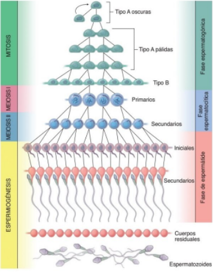
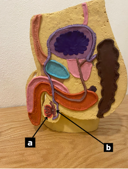
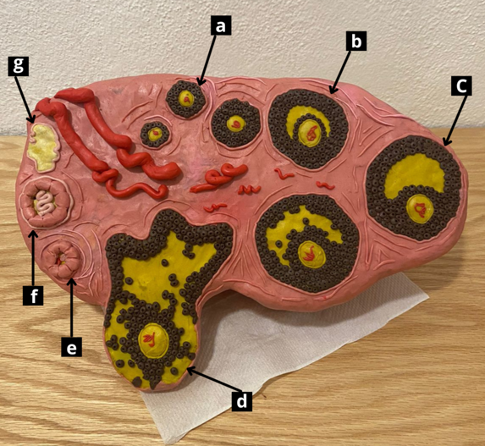
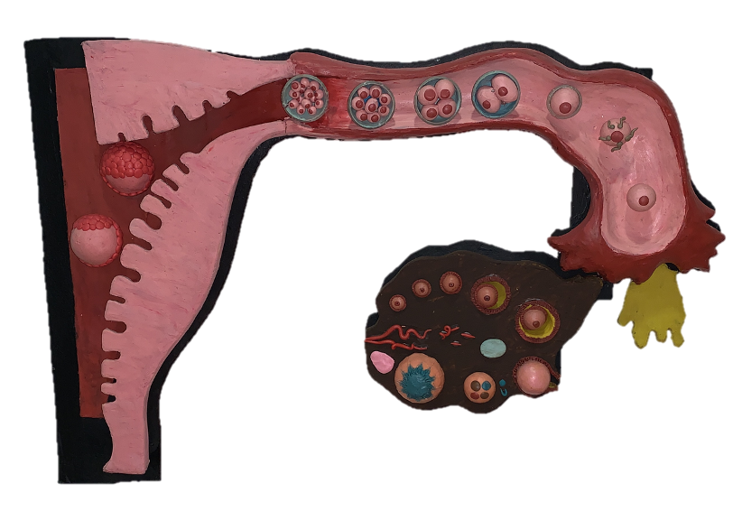
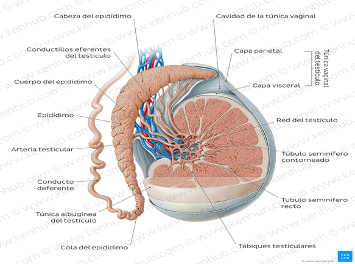
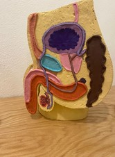
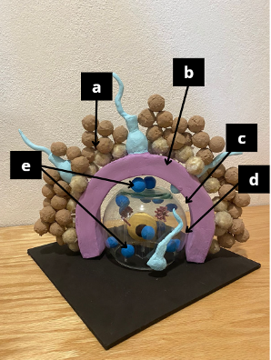
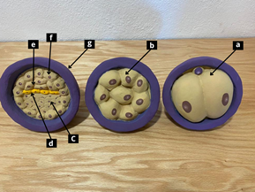
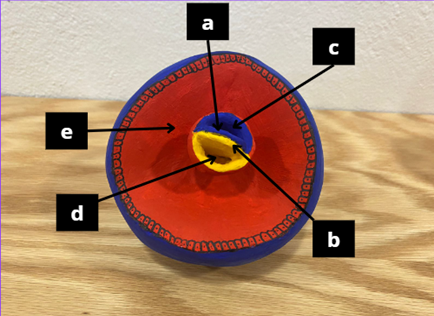

Guión del museo para estudiantes del área de la salud
Recurso de apoyo para comprender los fundamentos de la gametogénesis y la fertilización humana.
Espermatogénesis
Es un proceso guiado por un sistema hormonal en el que se forman espermatozoides a partir de las células llamadas espermatogonias, a través de diferenciación citológica y meiosis, proceso que consiste en dividir el material genético de una célula diploide en 4 células haploides.
El proceso consiste en 3 fases (Fig. 1-1):
- La fase espermatogénica o mitótica: las espermatogonias (células diploides) se multiplican por mitosis y posteriormente se diferencian a espermatocitos primarios.
- La fase espermatocitica o meiótica: el espermatocito primario se divide a través de la meiosis I, formando 2 espermatocitos secundarios y estos a su vez se dividen en la meiosis II, en 4 espermátides, total de células hijas por cada espermatocito primario.
- Espermiogénesis: las espermátides sufren una remodelación celular extensa para formar acrosoma, flagelo, vaina mitocondrial y una reducción del citoplasma, para salir a la luz del túbulo seminífero.

La producción de hormonas es necesaria para que se lleve a cabo la espermatogénesis, comienza a nivel del hipotálamo con la producción de hormona liberadora gonadotropina (GnRH), viaja a través del sistema porta hipotálamo-hipofisiario a la hipófisis, quien, tras ser estimulada por la GnRH, produce la hormona folículo estimulante (FSH) y la hormona luteinizante (LH).
Estas dos hormonas viajan por la sangre, hasta llegar a los testículos donde la hormona folículo estimulante (también llamada hormona estimulante de la espermatogénesis), actúa sobre las células sustentaculares (Sertoli) para que secreten inhibina y conviertan estrógenos en testosterona.
La hormona luteinizante (también llamada hormona estimulante de las células intersticiales), estimula a las células intersticiales (Leydig) para producir testosterona, necesaria para la espermatogénesis.

Una vez los espermatozoides alcanzan la luz de los túbulos seminíferos, son transportados gracias a contracciones musculares de los túbulos hacia el epidídimo donde sufren cambios bioquímicos y físicos, necesarios para su movilidad, un proceso llamado "maduración" de aproximadamente 14 días. La falta de este proceso disminuye la capacidad de fertilizar de un 80% a 7%.
Ovogénesis
Es un proceso que ocurre en los ovarios, consiste en la diferenciación de las células germinales primordiales (CGP) a ovocitos secundarios capaces de ser fertilizados. Durante el periodo prenatal las CGP migran hacia las crestas gonadales donde se transforman en ovogonias. A partir de este momento, entran en un intenso período de actividad mitótica, ocurre del segundo al quinto mes de vida intrauterina.
Estos ovocitos primarios entran en la primera división meiótica y se detienen en la fase de diploteno de la profase I, hasta el inicio de la pubertad, esto implica la reactivación del eje hipotálamo-hipofisario-gonadal. Cada ovocito primario está rodeado por una capa de células foliculares, este conjunto es denominado folículo primordial.
Cada 28-30 días durante la edad fértil de una mujer, una colonia conformada por 10-30 ovocitos primarios reanudan su crecimiento folicular. Las células foliculares aumentan de tamaño y formarán los folículos primarios. Conforme avanzan los días del ciclo menstrual, los folículos siguen aumentando de tamaño por la acción de la hormona foliculoestimulante y pasan de folículo primario a secundario.
El folículo secundario está conformado por:
- Las tecas (interna muy vascularizada y externa fibrosa)
- La corona radiada (formada por células foliculares)
- La zona pelúcida
- El antro
Finalmente, solo un folículo de la colonia seguirá creciendo y se convertirá en folículo terciario o maduro. Este contiene un ovocito primario, rodeado por la corona radiada, permanece suspendido en el antro (que ahora es de gran tamaño) por un grupo de células foliculares denominadas cúmulo ooforo. Solo un folículo terciario de la colonia llega a ser el folículo dominante.

Entre 10 a 12 horas antes de la ovulación, ocurre una descarga de hormona luteinizante, provocando una protrusión de la pared del ovario, conocida como estigma, que sufrirá isquemia para que ocurra la ovulación. En este momento el ovocito primario que se encuentra en el interior del folículo maduro reanuda la primera división meiótica (detenida en diploteno), dividiéndose en dos células hijas: el ovocito secundario y el primer corpúsculo polar, ambas células tienen 23 cromosomas.
El pico de hormona luteinizante, en conjunto con la foliculoestimulante provocan la rotura del estigma y expulsión del ovocito secundario, que sale rodeado por la zona pelúcida y la corona radiada. Este proceso se denomina ovulación. Ambas células entran en la segunda división meiótica y se detienen en metafase II hasta que el ovocito sea fertilizado.
En el ovario el folículo roto se llena de sangre procedente de la teca interna, formando un cuerpo hemorrágico. Posteriormente sus paredes y las tecas del folículo maduro se colapsan e inducen la formación del cuerpo lúteo que segrega progesterona y estrógenos en menor cantidad.
Fertilización
La fertilización es el proceso de unión de un espermatozoide maduro y capacitado con un ovocito secundario para dar lugar a una célula diploide denominada cigoto, que entra en mitosis y se dan dos blastómeros hijos, que continuarán dividiéndose para formar una mórula, y después un blastocisto, posteriormente gástrula, y finalmente tendremos un embrión/feto.
Transporte del ovocito
Una vez liberado el ovocito maduro del folículo terciario, es captado por las fimbrias, lo lleva a la tuba uterina, por contracciones del músculo liso, esto se realiza gracias a las altas concentraciones de estrógenos.

Transporte de los espermatozoides
Una vez formados los espermatozoides, son transportados por el músculo liso de los túbulos, van de la luz de los túbulos seminíferos, hacia los rectos, red testicular, conductos eferentes, luego se trasladan hacia el epidídimo. Aquí llevan a cabo la maduración que durará aproximadamente 14 días, necesaria para darles movilidad a los espermatozoides.

Durante el orgasmo, el hombre eyacula el semen, que contiene espermatozoides. Estos son transportados del epidídimo hacia el conducto deferente, eyaculador, uretra prostática, continuando por el resto de la uretra y salen del pene junto con el líquido seminal.

Una vez que el semen (espermatozoides y líquido seminal) es depositado en la vagina por una eyaculación, los espermatozoides continúan su trayecto hacia la ampolla de la tuba uterina, siendo este el sitio más frecuente de fertilización, donde se encontrarán con el ovocito maduro.
Cuando los espermatozoides se depositan en vagina, se van a capacitar en su trayecto hasta la ampolla tubárica. Este proceso ocurre gracias al pH ácido de la vagina, donde ocurre una modificación física de la superficie celular del espermatozoide, provocando:
- Aumento de la movilidad espermática
- Reconocimiento y adhesión con la zona pelúcida
- Exocitosis de su contenido acrosómico
El Acto de Fertilización
Cuando los espermatozoides penetran la corona radiada entran en contacto con la zona pelúcida. Esta es una capa compuesta de 4 glicoproteínas: ZP1, ZP2, ZP3 y ZP4, su función es evitar la polispermia. Una vez están en contacto los espermatozoides con la zona pelúcida, ZP3 funcionará como receptor de unión con el acrosoma, mientras que, ZP2 actúa como receptor secundario.
La unión de ZP3 y ZP4 inducirá la reacción acrosómica del espermatozoide, lo que significa que hay exocitosis de enzimas del contenido acrosomal como: acrosina (enzima que rompe los componentes de la zona pelúcida), hialuronidasa, fosfatasa ácida, β-glucosidasa, entre otras. Esto permite la penetración de la zona pelúcida por los espermatozoides.

Una vez el espermatozoide penetra la zona pelúcida, entra al espacio perivitelino, y el más rápido se pone en contacto con el plasmalema del ovocito. Para este momento, el acrosoma del espermatozoide ya ha utilizado el tercio anterior de su membrana plasmática y la membrana acrosómica interna, persistiendo la membrana postacrosómica en la parte posterior de la cabeza.
En esta membrana se encuentra la fertilina, molécula que fusiona las membranas plasmáticas de los gametos y permite que se introduzca el contenido del espermatozoide (núcleo, centriolos proximal y distal, el flagelo y las mitocondrias). Las mitocondrias paternas degeneran posteriormente, si persisten se da una condición llamada heteroplasmia, afectando los tejidos con alta demanda metabólica (cardiomiopatías). Una vez que el pronúcleo masculino se encuentra dentro del ovocito, se unirá con el pronúcleo del ovocito y forman un cigoto.
En el momento que se pone en contacto la membrana postacrosómica del espermatozoide con el plasmalema del ovocito, esta se despolariza, lo que desencadena la reanudación de la segunda fase de meiosis del ovocito y segundo cuerpo polar, quienes estaban detenidos en metafase II. A la vez se liberan los gránulos corticales del ovocito para inactivar los receptores ZP2 y ZP3, a este proceso se le llama reacción cortical o de zona.
Primera Semana del Desarrollo Humano
Una vez concluida la fertilización, el cigoto experimenta cambios metabólicos y comienza el período de segmentación, un proceso de divisiones mitóticas que son holoblásticas (totales o completas), asimétricas y asincrónicas, que duran entre 3 a 4 días.
De la primera división se obtienen 2 células denominadas blastómeras. Estas células se dividen nuevamente, a partir de este momento la segmentación es asincrónica. El embrión puede estar conformado por 3, 4, 5, o 6 células o más, en conjunto representan el mismo tamaño que tenía el cigoto y conservan su totipotencialidad (capacidad de formar un individuo completo).

Mientras ocurre la segmentación, el embrión es desplazado por contracciones musculares de las tubas uterinas en dirección al útero. Aún se encuentra dentro de la zona pelúcida, quien se encarga de proteger sus blastómeras del rozamiento con las paredes de la tuba uterina, para evitar que el embrión se implante en este lugar.
Después de que el embrión alcanza el estadio de 8 células, ocurre una restricción en su potencialidad celular. Ahora las blastómeras son pluripotentes (capacidad de formar diferentes tipos de células o tejidos, pero no un organismo completo). Cuando se han formado entre 16 y 32 células es la etapa de mórula aproximadamente 3 a 4 días después de la fertilización.
En esta etapa inicia el proceso de compactación, donde las blastómeras de la periferia se adhieren íntimamente mediante uniones ocluyentes y desmosomas para formar una estructura compacta perdiendo su identidad individual. Hacia el interior, las blastómeras forman uniones intersticiales o de hendidura que permiten la comunicación, el intercambio de iones y de moléculas pequeñas.
Al finalizar la compactación, las blastómeras se reacomodan para formar el blastocisto, compuesto por el trofoblasto y el embrioblasto. En la parte caudal del embrioblasto se encuentra el blastocele (cavidad del blastocisto).
El blastocisto sigue con su tamaño igual al cigoto mientras está dentro de la zona pelúcida. Aproximadamente en el día 5±1, llega a la cavidad uterina, donde flotará en las secreciones uterinas por 1 o 2 días. A partir del día 7±1, inicia la implantación, que consiste en la adhesión del blastocisto al epitelio endometrial.
Segunda Semana del Desarrollo Humano
Alrededor del día 8±1, la mayor parte del blastocisto estará interiorizado en el tejido endometrial. El sincitiotrofoblasto rompe el estroma endometrial, formando lagunas de sangre materna que sirven de nutrición al embrión. El trofoblasto será cubierto en su totalidad por el epitelio endometrial aproximadamente al día 12±1.
Mientras ocurre la implantación, las células del embrioblasto se reorganizan y forman el embrión bilaminar. El epiblasto es una capa gruesa con células cilíndricas que forman el piso de la cavidad amniótica. El hipoblasto es una capa de células cuboideas que forma el techo del blastocele, el futuro saco vitelino.
A partir del embrioblasto se diferencian unas células llamadas amnioblastos, secretarán líquido amniótico en la cavidad amniótica, formada entre el epiblasto y citotrofoblasto. Por otro lado, las células del hipoblasto (endodermo extraembrionario) migrarán y revestirán el blastocele formando así el saco vitelino primitivo.
En este momento aparece el mesodermo extraembrionario, que se forma entre el citotrofoblasto por fuera y rodea por dentro al saco vitelino primitivo y la cavidad amniótica. Este mesodermo rápidamente prolifera, después se le forman espacios que confluyen y forman el celoma extraembrionario.

A la vez que todo ese proceso sucede, en el hipoblasto ocurre una segunda migración de células, provocando que el saco vitelino primitivo se divida en 2 partes: una relacionada con el hipoblasto llamada saco vitelino secundario o definitivo y un remanente del saco vitelino primitivo que en días posteriores desaparecerá.
Quinta Semana del Desarrollo
Durante esta semana, el embrión crece considerablemente. Ya se puede medir la longitud coronilla-rabadilla (C-R). Tiene forma de "C", los somitas son prominentes y pueden contarse con facilidad.
Sistema Nervioso
La cabeza aumenta de tamaño por el rápido desarrollo del encéfalo a partir de las vesículas cerebrales secundarias (telencéfalo, diencéfalo, mesencéfalo, metencéfalo y mielencéfalo) y de las prominencias faciales. A partir de las placodas ópticas se forman las vesículas de la lente que forman el cristalino.
Arcos Faríngeos
Al inicio de esta semana son cuatro arcos faríngeos. Conforme pasan los días estos crecen y para el final de esta semana, el segundo arco faríngeo crece, ocultando el tercero y cuarto arco faríngeo, dejando una depresión llamada seno cervical.
Sistema Cardiovascular
La prominencia cardiaca aún es visible y continúa el tabicamiento de las aurículas y los ventrículos.
Miembros
Durante esta semana, los miembros superiores comienzan a tomar forma de pala o remo, mientras se forma la placa que dará origen a la mano. Simultáneamente, en los primeros días de esta semana, los brotes o yemas de los miembros inferiores emergen y para el final de la semana adquieren la forma de pala o ramo.
Sexta Semana del Desarrollo
El embrión mide 8 a 14 mm y presenta cambios morfológicos significativos.
La cabeza es desproporcionadamente grande en comparación con el tronco, comienza a enderezarse con respecto al tronco. Sus estructuras faciales son más definidas. En la primera hendidura faríngea aparecen seis montículos auriculares, entre el primero y segundo arco. Estos montículos formarán los pabellones auriculares (orejas).
En las placas de las manos aparecen los rayos interdigitales que son esbozos de los futuros dedos. El rápido crecimiento del intestino medio da lugar a la formación de la hernia umbilical fisiológica en la parte proximal del cordón umbilical.
Séptima Semana del Desarrollo
El embrión alcanza una longitud C-R de 13 a 22 milímetros en esta semana y presenta los siguientes cambios morfológicos:
La cabeza comienza a enderezarse y las somitas dejan de ser visibles. Los esbozos auriculares se fusionan para formar los pabellones auriculares rudimentarios, y aparecen los esbozos de los párpados. Las membranas interdigitales de las manos comienzan a tener apoptosis, permitiendo la separación de los dedos, mientras aparecen los rayos digitales en los pies.
En cuanto a la diferenciación sexual, se diferencian los testículos y los ovarios aún están indiferenciados. Los genitales externos siguen indiferenciados en ambos sexos. Finalmente, la membrana cloacal involuciona, mientras la cola del embrión es corta y aún visible.
Octava Semana del Desarrollo
Al finalizar la octava semana se concluye la etapa embrionaria y comienza la fetal (9na semana). El embrión en esta semana tiene una longitud C-R de 22-31 mm.
La cabeza (que conforma casi la mitad del cuerpo del embrión) comienza a disminuir su tamaño y se redondea. Los párpados cubren por completo los ojos, mientras que los pabellones auriculares comienzan a ascender desde el cuello hasta alcanzar su posición definitiva a nivel de los ojos. El cuello comienza a estirarse.
Mientras continúa el desarrollo de los miembros superiores e inferiores, las manos y pies se aproximan y pueden tocarse. Las membranas interdigitales desaparecen al final de esta semana, liberando completamente los dedos de manos y pies.
Los genitales externos comienzan a diferenciarse, con cambios muy sutiles. Por otra parte, la cola desaparece o queda un pequeño vestigio. El hígado se convierte en el principal órgano hematopoyético y en el fémur se forman los centros de osificación primarios.
Novena Semana del Desarrollo
En esta semana comienza el periodo fetal. El feto alcanza una longitud C-R de 45 a 52 mm de longitud, puede pesar de 7.2 hasta 9 gramos en esta semana.
Aunque la cabeza sigue disminuyendo su tamaño, aún es casi la mitad del tamaño del feto. La cara es ancha, sus ojos están separados entre sí, aún no alcanzan su posición definitiva. Por otro lado, las orejas ya se encuentran bien formadas y en su posición definitiva. Las prominencias nasales se unen haciendo visible la nariz.
Se aprecia que los miembros superiores son más grandes que los inferiores. El feto continúa moviendo los miembros, siguen imperceptibles para la madre.